Gallery: Comparing Groups
Source:vignettes/articles/gallery-comparisons.Rmd
gallery-comparisons.Rmd本页解决什么问题：Compare groups: bars, boxes, violins, beeswarm, lollipops, forests. 前置：已完成 relational
下一步：→ gallery-distributions
Group comparisons are the bread and butter of statistical graphics: bars, boxes, violins, and cumulative curves all place summaries or distributions side by side.
Bars
Counts by class
Count bars tally the rows per category — map only x and
mark_bar() knows to count. Here it shows how many cars of
each class are in the ggplot2::mpg data.
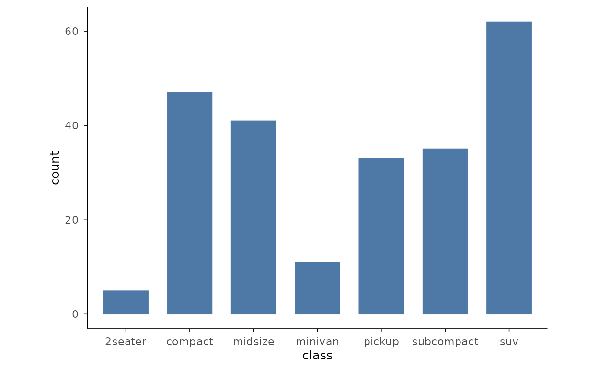
Value bars
Map y as well and the bars read their heights directly
from a data column. Inline data frames are a convenient source for
small, hand-built figures.
dfv <- data.frame(cat = c("A", "B", "C", "D"), val = c(12, 7, 19, 5))
dfv |>
plotit(encode(x = cat, y = val)) |>
mark_bar()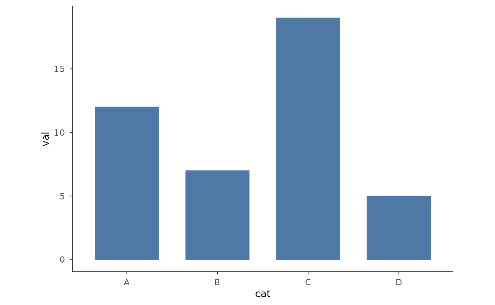
Stacked bars
Mapping a second categorical variable to fill and
stacking shows the composition of every group at a glance.
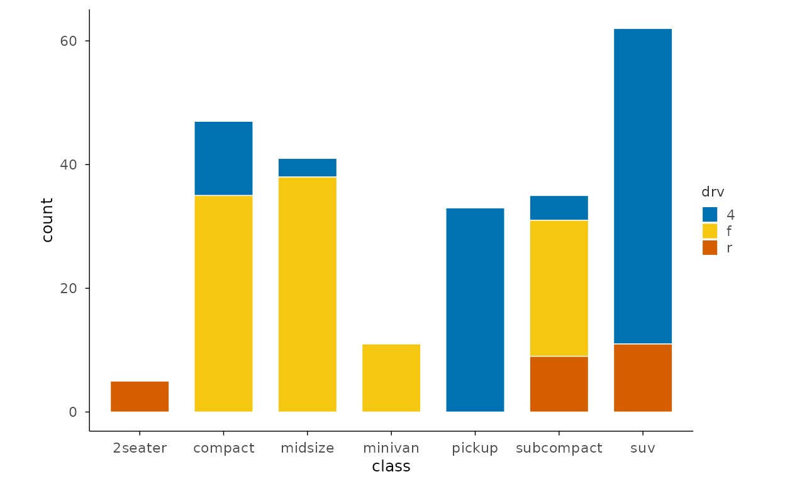
Filled bars
With position = "fill" every stack is scaled to a
constant height, turning the comparison into group shares that sum to
one.
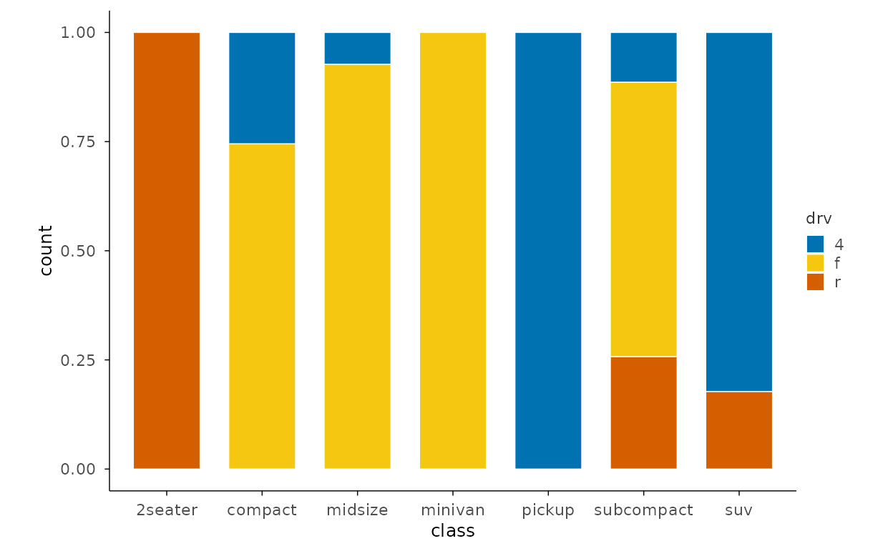
Flipped bars
Long category labels read better along the horizontal axis — flip the
coordinates with project_cartesian(flip = TRUE).
ggplot2::mpg |>
plotit(encode(x = class)) |>
mark_bar() |>
project_cartesian(flip = TRUE)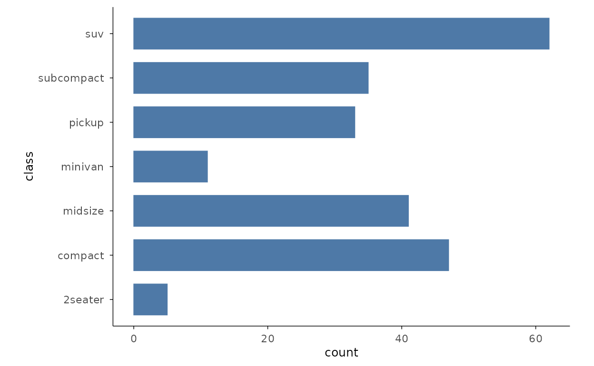
Grouped bars
Colour by a second group and dodge the bars side by side. Value bars
need pre-aggregated data, so summarise with aggregate()
first.
mpg_grp <- aggregate(hwy ~ class + drv, data = ggplot2::mpg, FUN = mean)
mpg_grp |>
plotit(encode(x = class, y = hwy, fill = drv)) |>
mark_bar(position = "dodge")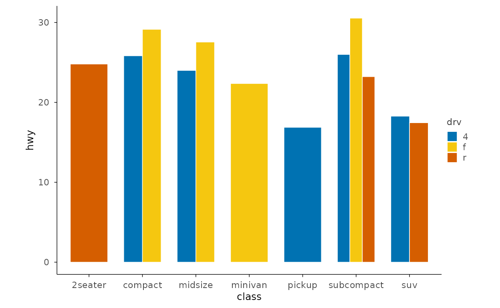
Lollipop and Dumbbell
Lollipop chart
mark_lollipop() anchors each point with a stem at zero,
giving bar-like rankings without the visual weight of a filled
rectangle.
dfl <- data.frame(cat = LETTERS[1:6], val = c(3, 7, 2, 9, 5, 6))
dfl |>
plotit(encode(x = cat, y = val)) |>
mark_lollipop()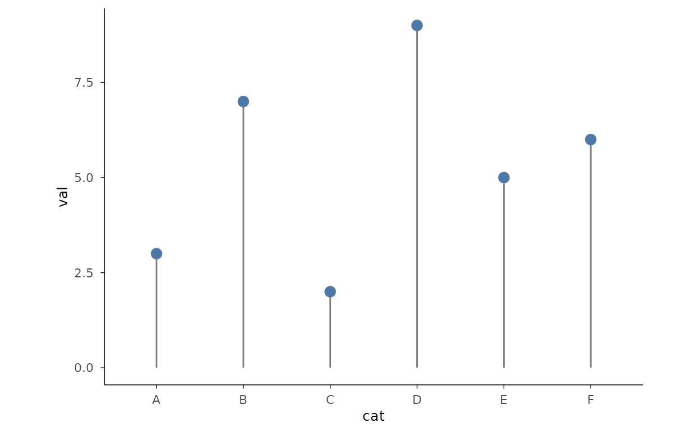
Dumbbell chart
mark_dumbbell() connects paired before/after values with
a line. Encode the start in y and the end in
yend; each row is one comparison.
dfd <- data.frame(
item = c("A", "B", "C", "D", "E"),
before = c(3, 5, 2, 8, 4),
after = c(7, 6, 5, 10, 6)
)
dfd |>
plotit(encode(x = item, y = before, yend = after)) |>
mark_dumbbell()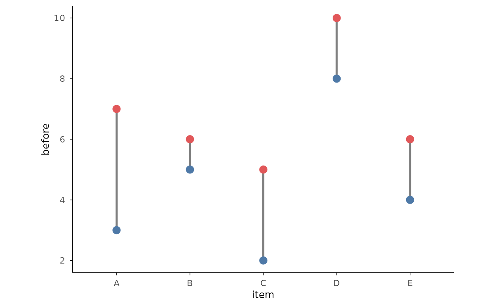
Boxplots
Boxplot by group
mark_boxplot() summarises a distribution with quartiles
and outliers. Fill by the grouping variable so each box is visually
distinct.
iris |>
plotit(encode(x = Species, y = Sepal.Length, fill = Species)) |>
mark_boxplot()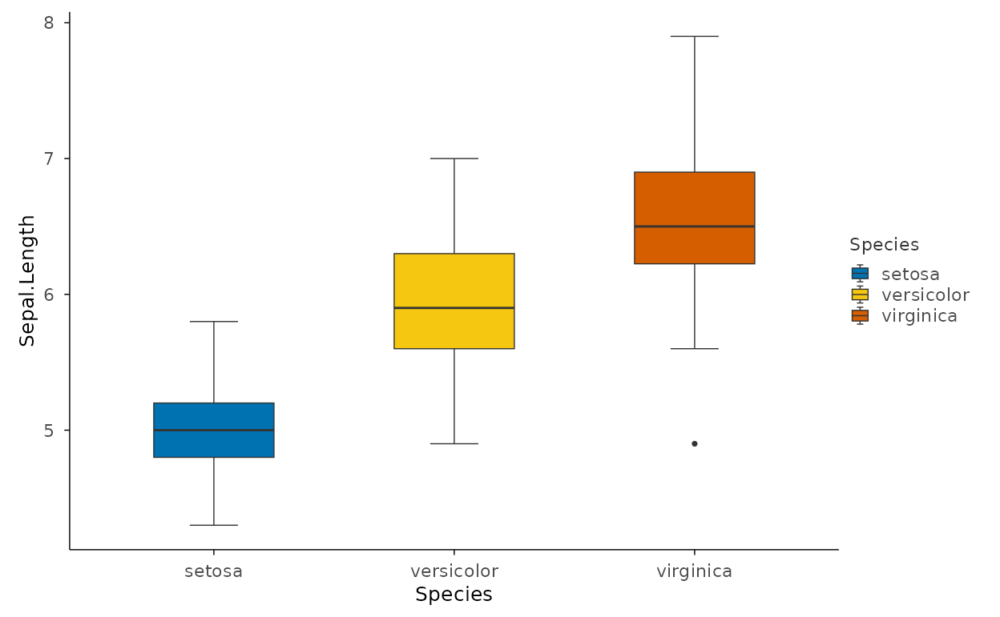
Grouped boxplots
Two grouping variables on the same axes make pairwise comparisons
easy — engine cyl on x, transmission
am mapped to fill.
mtcars |>
plotit(encode(x = factor(cyl), y = mpg, fill = factor(am))) |>
mark_boxplot()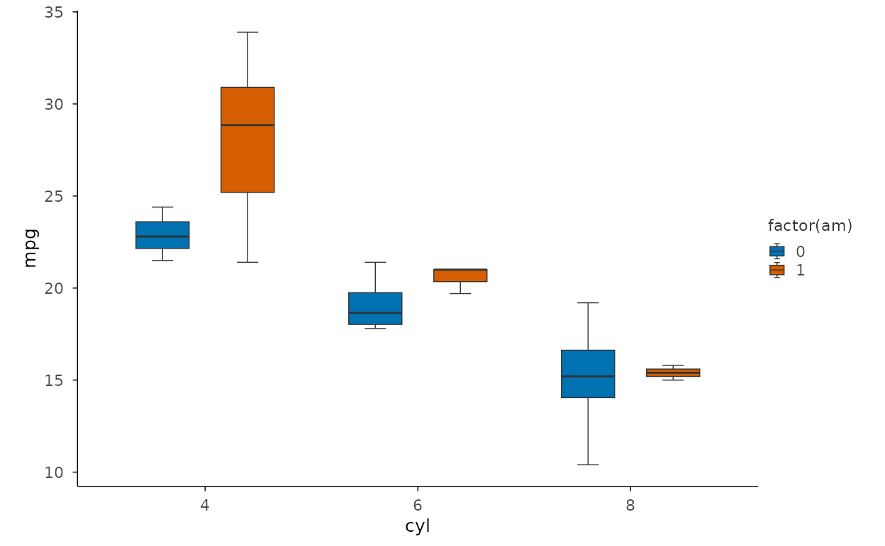
Violins and Strips
Violin plot
A violin shows the full density shape instead of just the quartiles.
draw_quantiles = 0.5 marks the median with a line across
each body.
iris |>
plotit(encode(x = Species, y = Sepal.Length, fill = Species)) |>
mark_violin(draw_quantiles = 0.5)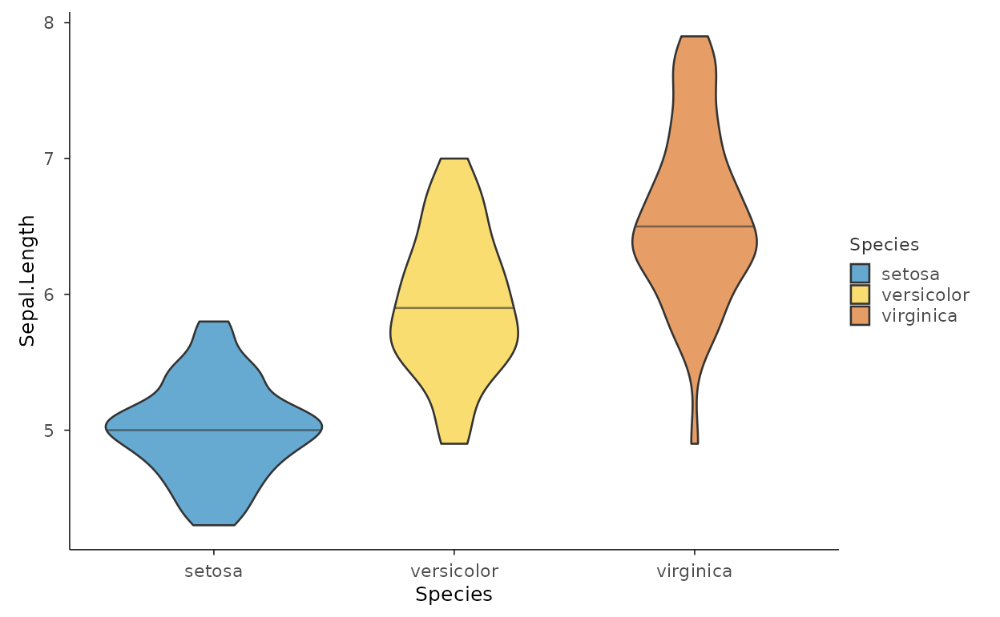
Beeswarm
mark_beeswarm() packs every point without overlap,
preserving each observation while showing where the data are
densest.
iris |>
plotit(encode(x = Species, y = Sepal.Length, colour = Species)) |>
mark_beeswarm()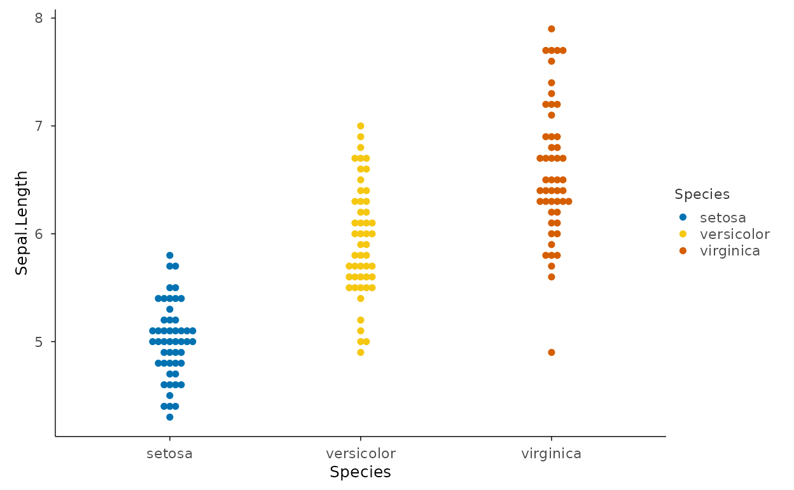
Strip plot
A strip plot jitters points horizontally along each group.
set.seed() keeps the jitter reproducible across
renders.
set.seed(42)
iris |>
plotit(encode(x = Species, y = Sepal.Length, colour = Species)) |>
mark_point(position = "jitter", alpha = 0.5, size = 1.5)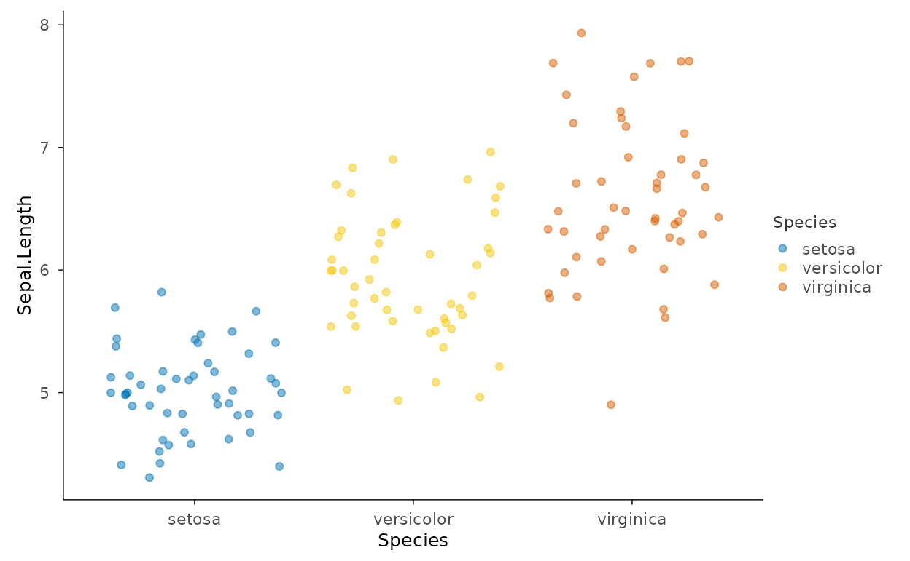
Boxplot with jitter overlay
Layer a boxplot and jittered points together for the classic raw-data-plus- summary view. Suppress the boxplot’s own outliers so points are not doubled.
set.seed(42)
iris |>
plotit(encode(x = Species, y = Sepal.Length, fill = Species)) |>
mark_boxplot(outlier.shape = NA) |>
mark_point(mapping = encode(colour = Species), position = "jitter", alpha = 0.4, size = 1)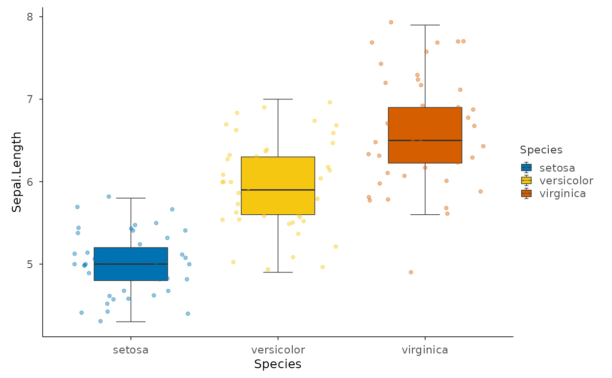
Cumulative Distributions
Single ECDF
mark_ecdf() draws the empirical cumulative distribution
as a step — every observation is represented exactly, with no binning
parameter to choose.

ECDF by group
Colouring the ECDF by a group compares entire distributions at once: shifts, spreads, and tail behaviour are all visible.
ec <- data.frame(
value = c(iris$Sepal.Length, iris$Petal.Length),
part = rep(c("Sepal", "Petal"), each = 150)
)
ec |>
plotit(encode(x = value, colour = part)) |>
mark_ecdf()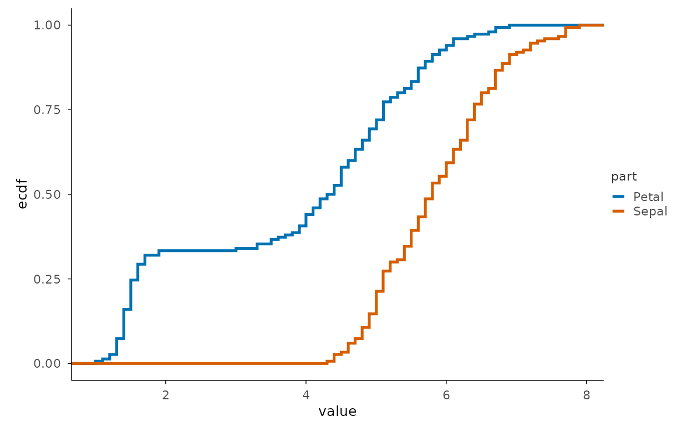
Distributions Across Groups
Side-by-side histograms
Dodging histograms by a fill group aligns bins between categories, making shape comparisons direct.
iris |>
plotit(encode(x = Sepal.Length, fill = Species)) |>
mark_histogram(position = "dodge", bins = 20)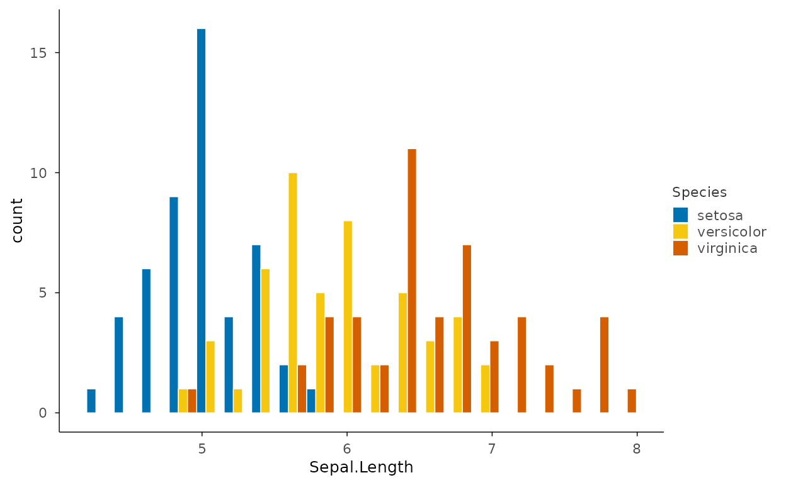
Density by group
Overlapping density curves are the smoothest way to compare several
groups on one panel. Mapping both fill and
colour gives a translucent curve outline.
iris |>
plotit(encode(x = Sepal.Length, fill = Species, colour = Species)) |>
mark_density(alpha = 0.4)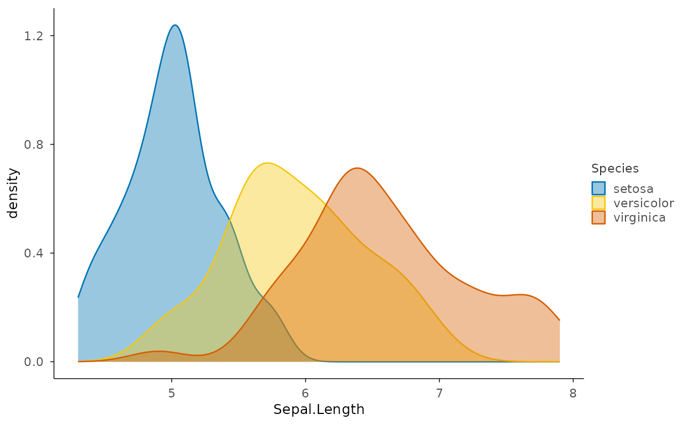